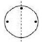

Question:1
State the number of lines of symmetry for the following figures:
(i) An equilateral triangle
(ii) An isosceles triangle
(iii) A scalene triangle
(iv) A rectangle
(v) A rhombus
(vi) A square
(vii) A parallelogram
(viii) A quadrilateral
(ix) A regular pentagon
(x) A regular hexagon
(xi) A circle
(xii) A semicircle
Solution:
(i) An equilateral triangle has 3 lines of symmetry.
(ii) An isosceles triangle has 1 line of symmetry.
(iii) A scalene triangle has no line of symmetry.
(iv) A rectangle has 2 lines of symmetry.
(v) A rhombus has 2 lines of symmetry.
(vi) A square has 4 lines of symmetry.
(vii) A parallelogram has no line of symmetry.
(viii) A quadrilateral has no line of symmetry.
(ix) A regular pentagon has 5 lines of symmetry.
(x) A regular hexagon has 6 lines of symmetry.
(xi) A circle has an infinite number of lines of symmetry all along the diameters.
(xii) A semicircle has only one line of symmetry.
Question:2
What other name can you give to the line of symmetry of
(i) An isosceles triangle?
(ii) A circle?
Solution:
(i) An isosceles triangle has only 1 line of symmetry.
This line of symmetry is also known as the
altitude of an isosceles triangle.
(ii) A circle has an infinite number of lines of symmetry all along its
diameters.

Question:3
Identify three examples of shapes with no line of symmetry.
Solution:
A scalene triangle, a parallelogram and a trapezium do not have any line of symmetry.
Question:4
Identify multiple lines of symmetry, if any, in each of the following figures:
Solution:
(A) The given figure has 3 lines of symmetry. Therefore it has multiple lines of symmetry.
(B) The given figure has 2 lines of symmetry. Therefore it has multiple lines of symmetry.
(C) The given figure has 3 lines of symmetry. Therefore it has multiple lines of symmetry.
(D) The given figure has 2 lines of symmetry. Therefore it has multiple lines of symmetry.
(E) The given figure has 4 lines of symmetry. Therefore it has multiple lines of symmetry.
(F) The given figure has only 1 line of symmetry.
(G) The given figure has 4 lines of symmetry. Therefore it has multiple lines of symmetry.
(H) The given figure has 6 lines of symmetry. Therefore it has multiple lines of symmetry.
.jpg)
Question:5
In the following figures, the mirror line (i.e. the line of symmetry) is given as dotted line. Complete each figure performing reflection in the dotted (mirror) line. Also, try to recall the name of the complete figure.
Solution:
(a) It will be a square.
(b) It will be a triangle.
(c) It will be a rhombus.
(d) It will be a circle.
(e) It will be a pentagon.
(f) It will be an octagon.
Question:6
Each of the following figures shows paper cuttings with punched holes. Copy these figures on a plane sheet and mark the axis of symmetry so that if the paper is folded along it, then the wholes on one side of it coincide with the holes on the other side.
Solution:
The lines of symmetry in the given figures are as follows:
(a)
(b)
(c)
(d)
(e)
(f)
(g)
(h)
(i)
.jpg)
(j)
(k)
(l)

Question:7
In the following figures if the dotted lines represent the lines of symmetry, find the other hole (s).
Solution:
The other holes in the given figures are as follows:
(a)
(b)
(c)
(d)
.jpg)
(e)
(f)
(1).jpg)
Question:8
Give the order of rotational symmetry for each of the following figures when rotated about the marked point (x):
Solution:
(i) The given figure has its rotational symmetry as 4.
(ii) The given figure has its rotational symmetry as 3.
(iii) The given figure has its rotational symmetry as 3.
(iv) The given figure has its rotational symmetry as 4.
(v) The given figure has its rotational symmetry as 2.
(vi) The given figure has its rotational symmetry as 4.
(vii) The given figure has its rotational symmetry as 5.
(viii) The given figure has its rotational symmetry as 6.
(ix) The given figure has its rotational symmetry as 3.
Question:9
Name any two figures that have both line symmetry and rotational symmetry.
Solution:
An equilateral triangle and a square have both lines of symmetry and rotational symmetry.
Question:10
Give an example of a figure that has a line of symmetry but does not have rotational symmetry.
Solution:
A semicircle and an isosceles triangle have a line of symmetry but do not have rotational symmetry.
Question:11
Give an example of a geometrical figure which has neither a line of symmetry nor a rotational symmetry.
Solution:
A scalene triangle has neither a line of symmetry nor a rotational symmetry.
Question:12
Give an example of a letter of the English alphabet which has (i) no line of symmetry and (ii) rotational symmetry of order 2.
Solution:
(i) The letter of the English alphabet which has no line of symmetry is Z.
(ii) The letter of the English alphabet which has rotational symmetry of order 2 is N.
Question:13
What is the line of symmetry of a semi-circle? Does it have rotational symmetry?
Solution:
A semicircle (half of a circle) has only one line of symmetry .
In the figure, there is one line of symmetry. The figure is symmetric along the perpendicular bisector l of the diameter XY.
A semi-circle does not have any rotational symmetry.
Question:14
Draw, whenever possible, a rough sketch of
(i) a triangle with both line and rotational symmetries.
(ii) a triangle with only line symmetry and no rotational symmetry.
(iii) a quadrilateral with a rotational symmetry but not a line of symmetry.
(iv) a quadrilateral with line symmetry but not a rotational symmetry.
Solution:
(i) An equilateral triangle has 3 lines of symmetry and a rotational symmetry of order 3.
(ii) An isosceles triangle has only 1 line of symmetry and no rotational symmetry.
(iii) A parallelogram is a quadrilateral which has no line of symmetry but a rotational symmetry of order 2.
(iv) A kite is a quadrilateral which has only one line of symmetry and no rotational symmetry.
Question:15
Fill in the blanks:
| Figures |
Centre of rotation |
Order of rotation |
Angle of rotation |
| Square |
|
|
|
| Rectangle |
|
|
|
| Rhombus |
|
|
|
| Equilateral triangle |
|
|
|
| Regular hexagon |
|
|
|
| Circle |
|
|
|
| Semi-circle |
|
|
|
Solution:
Question:16
Fill in the blanks:
| English alphabet Letter |
Line Symmetry |
Number of Lines of symmetry |
Rotational Symmetry |
Order of rotational Symmetry |
| Z |
Nil |
0 |
Yes |
2 |
| S |
− |
− |
− |
− |
| H |
Yes |
− |
Yes |
− |
| O |
Yes |
− |
Yes |
− |
| E |
Yes |
− |
− |
− |
| N |
− |
− |
Yes |
− |
| C |
− |
− |
− |
− |
Solution:
| English Alphabet Letter |
Line Symmetry |
Number of Lines of Symmetry |
Rotational Symmetry |
Order of Rotational Symmetry |
| Z |
No |
0 |
Yes |
2 |
| S |
No |
0 |
Yes |
2 |
| H |
Yes |
2 |
Yes |
2 |
| O |
Yes |
Infinite |
Yes |
Infinite |
| E |
Yes |
1 |
No |
0 |
| N |
No |
0 |
Yes |
2 |
| C |
Yes |
1 |
No |
0 |
Question:17
Which of the following has only 2 lines of symmetry?
(a) Equilateral triangle
(b) Rhombus
(c) Circle
(d) None of these of rotation
Solution:
The rhombus has only 2 lines of symmetry.
Hence, the correct answer is option (b)
Question:18
Which of the following is/are point symmetric?
(a) Rectangle
(b) Square
(c) Parallelogram
(d) All of these
Solution:
A point of symmetry is a point that represents a "center" of sorts for the figure.
Hence, the correct answer is option (d)
Question:19
Which of the following has an infinite number of lines of symmetry?
(a) Equilateral triangle
(b) Isosceles triangle
(c) Regular hexagon
(d) Circle
Solution:
A circle has infinite number of lines of symmetry
Hence, the correct answer is option (d).
Question:20
Which of the following is point symmetric?
(a) Equilateral triangle
(b) Trapezium
(c) Rectangle
(d) None of these
Solution:
A point of symmetry is a point that represents a "center" of sorts for the figure.
Hence, the correct answer is option (c)
Question:21
The number of lines of symmetry of a square is
(a) 2
(b) 3
(c) 4
(d) Infinite
Solution:
The number of lines of symmetry of a square is 4.
Hence, the correct answer is option (c).
Question:22
The number of lines of symmetry of a rectangle is
(a) 2
(b) 3
(c) 4
(d) 1
Solution:
The number of lines of symmetry of a rectangle is 2
Hence, the correct answer is option (a).
Question:23
The number of lines of symmetry of an equilateral triangle is
(a) 1
(b) 2
(c) 3
(d) 0
Solution:
The number of lines of symmetry of an equilateral triangle is 3
Hence, the correct answer is option (c).
Question:24
The order of rotational symmetry of an equilateral triangle is
(a) 0
(b) 1
(c) 2
(d) 3
Solution:
The order of rotational symmetry of an equilateral triangle is 3 i.e., 120°, 240° and 360°.
Hence, the correct answer is option (d).
Question:25
A rectangle has rotational symmetry of order
(a) 1
(b) 2
(c) 3
(d) 4
Solution:
A rectangle has order of rotational symmetry of 2 i.e., 180° and 360°
Hence, the correct answer is option (b).
Question:26
The number of lines of symmetry of an isosceles triangle is
(a) 0
(b) 1
(c) 2
(d) 3
Solution:
The number of lines of symmetry of an isosceles triangle is 1

Hence, the correct answer is option (b).